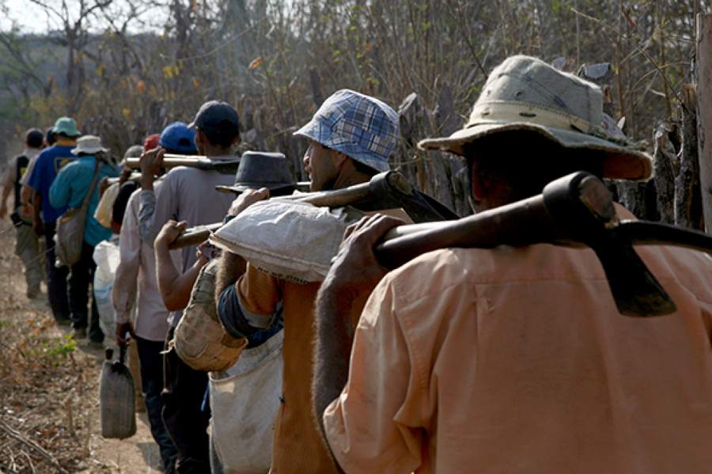

Trabalho análogo ao escravo
Problema:
O trabalho análogo ao escravo é uma das formas mais graves de violação dos direitos humanos no contexto laboral. Ele envolve situações em que indivíduos são submetidos a condições de trabalho desumanas, abusivas e degradantes, com restrições à sua liberdade, o que configura uma exploração severa. Embora as legislações internacionais e nacionais condenem essas práticas, o trabalho análogo ao escravo persiste em diversas indústrias, principalmente em setores como agricultura, construção, mineração e na indústria têxtil.
Características do Trabalho Análogo ao Escravo:
- Trabalho Forçado: O trabalhador é coagido a prestar serviços contra sua vontade, muitas vezes sob ameaça física, moral ou até mesmo de dívida. Isso implica que ele não tem liberdade para deixar o emprego, o que caracteriza uma restrição à liberdade individual.
- Jornada Exaustiva: O empregado é submetido a uma carga horária excessiva, sem condições mínimas de descanso ou recuperação física e mental. Isso pode incluir longos turnos, dias consecutivos de trabalho sem folga e falta de pausas adequadas.
- Condições Degradantes de Trabalho: A infraestrutura e os recursos fornecidos ao trabalhador são extremamente inadequados. Isso pode incluir alojamentos insalubres, alimentação de baixa qualidade, falta de saneamento básico, ausência de equipamentos de proteção individual (EPI), entre outros.
- Servidão por Dívida: O trabalhador é forçado a permanecer no emprego devido a uma dívida imposta ou manipulada pelo empregador. Por exemplo, a empresa pode descontar do salário valores abusivos por transporte, alimentação ou moradia, impossibilitando que o trabalhador quite sua dívida e deixe o emprego.
- Restrição de Locomoção: A liberdade de ir e vir do trabalhador é restringida por meio de práticas como retenção de documentos, vigilância contínua, isolamento geográfico ou ameaças de violência.
- Abuso de Vulnerabilidade: Grupos vulneráveis, como migrantes, trabalhadores de baixa escolaridade ou em situações de extrema pobreza, são os mais visados para o trabalho análogo ao escravo, já que muitas vezes aceitam essas condições por falta de alternativas ou desconhecimento de seus direitos.
Setores Mais Afetados:
- Agricultura e Pecuária: Nas áreas rurais, especialmente em grandes propriedades, trabalhadores são explorados em lavouras e fazendas, com jornadas exaustivas e condições precárias de moradia e higiene.
- Construção Civil: Nos canteiros de obras, é comum encontrar trabalhadores que vivem em alojamentos inadequados, com pouca ou nenhuma proteção contra acidentes de trabalho e submetidos a jornadas longas.
- Mineração: Na mineração, os trabalhadores enfrentam riscos à saúde e segurança, trabalhando em condições extremamente perigosas e em locais remotos, sem acesso a recursos básicos.
- Indústria Têxtil: Muitos trabalhadores são explorados em fábricas ou oficinas clandestinas, especialmente no setor de confecções, onde recebem salários baixíssimos e são submetidos a condições insalubres.
Impactos do Trabalho Análogo ao Escravo:
- Violação de Direitos Humanos: O trabalho escravo moderno é uma violação clara dos direitos fundamentais da pessoa, retirando sua dignidade e sua liberdade.
- Saúde Física e Mental: As jornadas exaustivas e as condições insalubres colocam em risco a saúde dos trabalhadores, que frequentemente sofrem de exaustão, doenças e acidentes de trabalho. Além disso, o trauma psicológico de viver sob ameaças constantes afeta profundamente a saúde mental.
- Desigualdade Social: O trabalho análogo ao escravo perpetua a pobreza e a marginalização social, pois os trabalhadores não conseguem sair da situação de exploração e melhorar sua condição de vida.
- Prejuízo à Imagem das Empresas: Empresas envolvidas em casos de exploração laboral sofrem danos à sua reputação, o que pode resultar em perda de clientes, investidores e parcerias comerciais, além de sanções legais.
Soluções:
- Fiscalização Rigorosa e Punição Eficaz: A ampliação da fiscalização pelas autoridades governamentais, como o Ministério do Trabalho no Brasil, é essencial. A realização de operações de resgate em locais com suspeita de exploração e a aplicação de sanções severas aos empregadores envolvidos são fundamentais para desmantelar esquemas de trabalho análogo ao escravo.
- Educação e Conscientização: Promover campanhas de conscientização, tanto para trabalhadores quanto para empregadores, é crucial. Muitos trabalhadores em condições análogas à escravidão desconhecem seus direitos e os recursos disponíveis para denunciar abusos.
- Reforço da Legislação Trabalhista: Embora existam leis que proíbem o trabalho escravo, é necessário fortalecer o cumprimento dessas normas, assegurando que as penalidades sejam aplicadas de maneira consistente.
- Incentivo à Cadeia de Fornecimento Ética: Empresas precisam adotar práticas de due diligence em suas cadeias de fornecimento para garantir que seus fornecedores e subcontratados não utilizem mão de obra análoga à escrava.
- Apoio às Vítimas Resgatadas: É crucial fornecer suporte social, econômico e psicológico às vítimas de trabalho análogo ao escravo, para que elas possam reintegrar-se ao mercado de trabalho e reconstruir suas vidas.
- Apoio de Empresas e Consumidores: Empresas e consumidores têm uma responsabilidade fundamental em combater o trabalho escravo.
- Responsabilidade Corporativa e Compliance: Companhias que desejam prevenir o envolvimento em trabalho análogo ao escravo precisam implementar programas de compliance trabalhista.
- Envolvimento da Sociedade Civil e Acompanhamento Internacional: Sociedade civil, sindicatos e organizações de direitos humanos devem continuar a pressionar governos e empresas para que aumentem seus esforços no combate ao trabalho escravo.
Exemplos Práticos de Combate ao Trabalho Análogo ao Escravo:
- Brasil: O Brasil tem sido um dos países com maiores avanços no combate ao trabalho escravo, especialmente por meio das ações do Grupo Especial de Fiscalização Móvel.
- Patagonia: A marca de roupas outdoor Patagonia adotou práticas rigorosas de auditoria e controle de sua cadeia de fornecimento, garantindo que seus produtos sejam fabricados em condições justas.
A erradicação do trabalho análogo ao escravo requer ações coordenadas de governos, empresas e sociedade civil. O combate eficaz passa por uma combinação de fiscalização, educação, suporte às vítimas e engajamento público em todos os níveis.